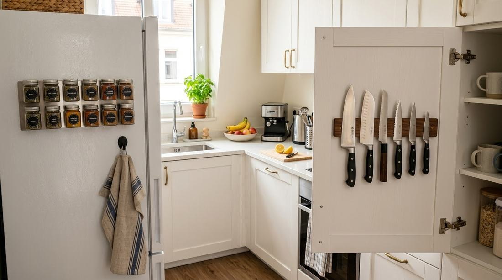
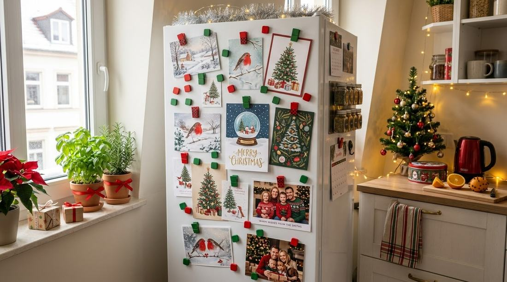
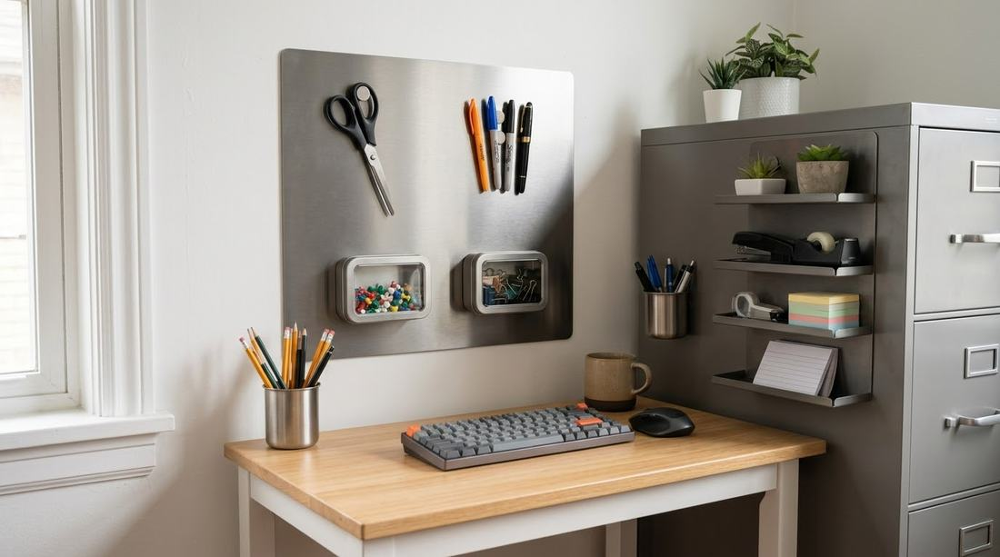
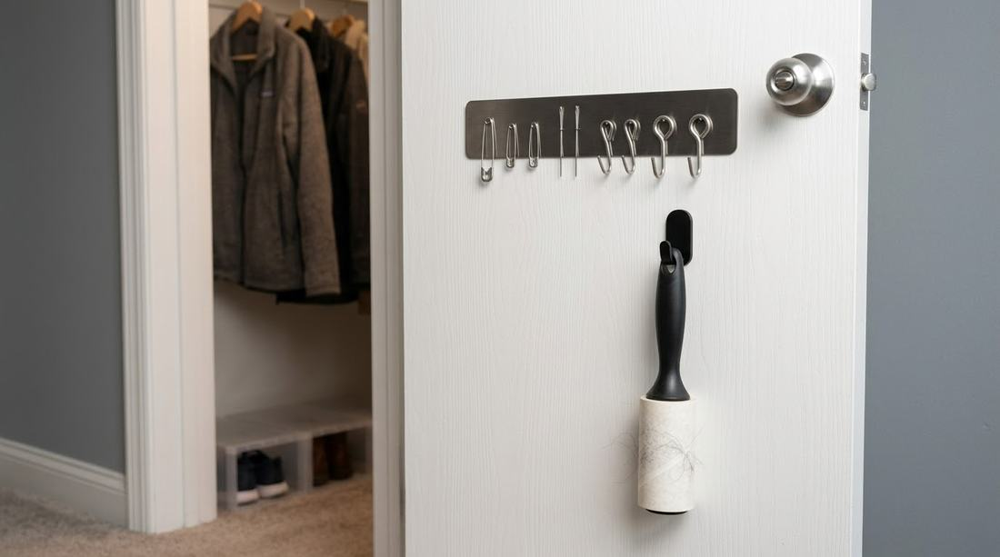
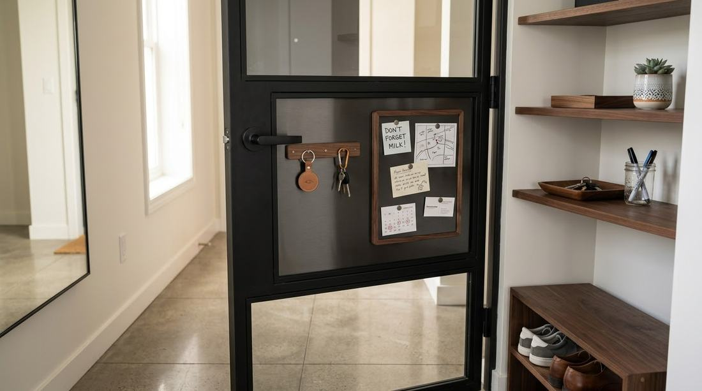
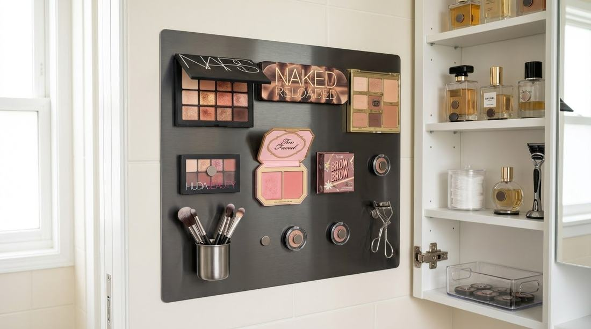
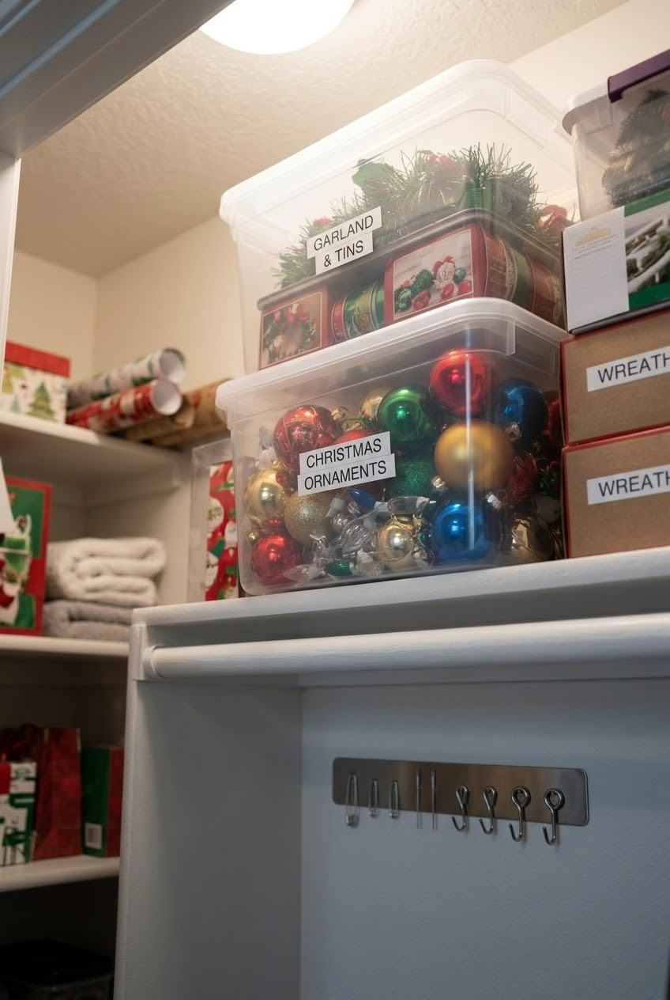
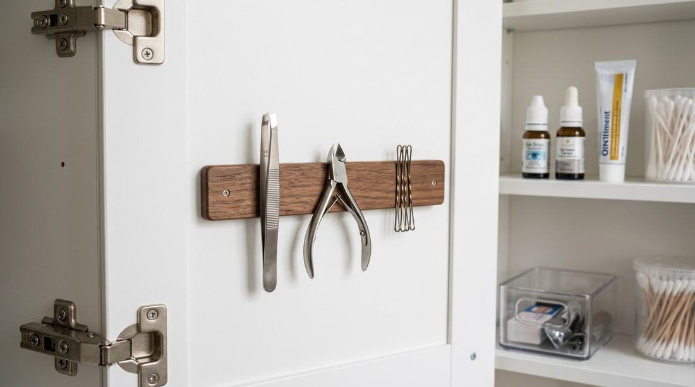

No-Drill Magnetic Storage
Magnetic storage ideas for small apartments
(plus holiday hacks)
You've got a drawer full of bobby pins that scatter every time you open it, a junk tray of loose screws and spare keys, and a holiday box of ornament hooks that seem to multiply into chaos every December.
Small apartments don't leave much room for extra organizers, and renters especially can't just screw cabinets or racks into the wall to fix the problem. This is exactly where magnetic storage earns its keep — it's nearly invisible, endlessly flexible, and some of the most renter-friendly closet storage and surface organization you can buy, with zero drilling required.
Once you see how many small, annoying clutter problems a few magnets can solve, it's hard to go back to loose drawers and junk trays.

Why magnetic storage works so well in small spaces
Magnetic storage solves a problem that bins and shelves can't — it uses vertical, otherwise-empty surfaces instead of competing for counter or floor space you don't have.
It uses space nobody else wants
In a small apartment, every flat surface is already overcommitted, but the sides and backs of things — the inside of a cabinet door, the side of a fridge, the back of a closet door — are almost always empty.
Genuinely no-drill by default
Most magnetic storage systems rely on either a magnetic strip, a metal surface that's already there, or a lightweight adhesive mount — none of which require drilling, and all of which come off cleanly at move-out. That makes magnetic storage one of the few organizing categories that's no-drill by default, not just when you choose the right product.
How magnetic storage actually holds up
A quality magnetic strip or disc isn't just for one spare key — many hold several pounds of metal items securely, which is more than enough for kitchen tools, makeup items, office supplies, or small hardware. The key is matching the strength of the magnet to the weight of what you're hanging, and making sure the surface (or the metal object itself) is suited to magnetic hold in the first place.
Room-by-room magnetic storage ideas
The same principle applied to the five spots where small clutter piles up fastest.
Kitchen
The kitchen is where magnetic storage shines brightest, because it's full of small metal items and short on counter space in most small apartments.
- A magnetic strip inside a cabinet door holds knives off the counter and out of a crowded drawer.
- Small magnetic spice tins stick to the side of the fridge or inside a cabinet, turning unused vertical space into a mini spice rack.
- A magnetic hook on the side of the fridge holds a dish towel or oven mitt within reach but off the counter.
- Magnetic strips can also corral bottle openers, scissors, and other small metal tools that otherwise end up loose in a drawer.

Bathroom
Bathroom counters are notoriously tiny in apartments, and magnetic storage can reclaim a surprising amount of that space.
- A magnetic strip mounted to the inside of a medicine cabinet door holds tweezers, nail clippers, and bobby pins upright and visible.
- Small magnetic containers stuck to the inside of a cabinet can hold cotton swabs or hair ties without taking up shelf space.
- A magnetic makeup organizer (a metal sheet with magnetic-backed palettes) turns loose makeup into a wall-mounted, drawer-free system.


Entryway
Entryways are often the most chaotic small space in an apartment, acting as a dumping ground the moment you walk in the door.
- A magnetic key holder near the door means keys never get lost in a bag or buried under mail again.
- A small magnetic board (paired with a no-drill adhesive mount) can hold reminder notes, mail, or event invites.
- Magnetic hooks on a metal door frame can hold a lightweight bag or umbrella temporarily.

Home office or workspace
If you're working from a small desk in a studio or shared space, magnetic storage keeps small supplies from sliding into chaos.
- A magnetic strip along the edge of a desk or the side of a metal filing cabinet holds scissors, paper clips, and pens.
- Small magnetic trays or tins corral push pins, staples, and other tiny items that are easy to lose in a drawer.
- A magnetic whiteboard with a no-drill adhesive back doubles as both a planner and light storage for small metal clips.

Closets
Even your small coat closet can benefit from magnetic storage, especially for small metal items that don't have an obvious home.
- A magnetic strip just inside the closet door can hold a sewing kit's needles, safety pins, or small hardware like curtain hooks.
- Magnetic hooks on a metal closet rod support can hold lightweight items like a lint roller or shoe horn.

Choosing the right magnetic storage for a renter-friendly setup
Not all magnetic storage requires drilling, but it's worth knowing the difference so you choose the right type for your space.
-
Adhesive-backed magnetic strips
These stick directly to any clean, dry surface — cabinet doors, closet walls, the inside of a pantry — with no drilling or mounting hardware at all.
-
Magnet-to-metal mounts
If you already have a metal surface (a fridge, a metal door frame, a radiator cover), you can skip adhesives entirely and just use strong magnets directly.
-
Tension rod and magnet combos
A tension rod fitted with small magnetic hooks or clips is a clever way to add hanging magnetic storage inside a closet without any wall contact at all.
-
Command-style strip mounts
For slightly heavier magnetic organizers (like a full magnetic board), a no-drill hook or strip mount rated for the item's weight keeps it secure and removable.
Step-by-step: setting up a magnetic storage system
A methodical pass through your apartment turns a few loose magnets into an actual system.
-
Walk through and note underused surfaces
The inside of cabinet doors, the side of the fridge, closet walls, and desk edges are usually the biggest opportunities.
-
Sort small metal items by room and function
Do this before buying anything, the same way you'd sort before organizing any closet. It tells you how many strips, hooks, or discs you actually need.
-
Test magnet strength against item weight
A light magnetic strip is fine for bobby pins and paper clips, but knives or heavier tools need a stronger-rated strip.
-
Mount the lightest, most reversible option first
Adhesive strips or no-drill hooks let you adjust placement without damage if the first spot doesn't work.
-
Group by category once mounted
Keep kitchen tools together, office supplies together, and so on, rather than mixing categories on the same strip.
-
Reassess every few months
As your routine reveals which items you reach for daily versus rarely, shift placement so your most-used items are in the most convenient spots.
Holiday decor hacks using magnetic (and no-drill) storage
The holidays bring a predictable problem for renters: more decor, more clutter, and still no permission to drill a single hole.
Magnetic solutions for holiday decor
- Magnetic ornament hooks let you hang lightweight ornaments on any metal surface — a radiator cover, a metal shelf, even some light fixtures — without needing a tree at all.
- A magnetic strip on the fridge becomes an instant spot for holiday cards as they arrive, keeping them visible instead of piling up on a counter.
- Small magnetic hooks on metal door frames can hold lightweight string lights or small wreaths temporarily during the season.
No-drill solutions for bigger holiday decor
Not everything holiday-related is light enough for magnets, so it helps to pair magnetic storage with other renter-friendly tools during the season.
- Adhesive hooks rated for the specific weight of a wreath or garland are the standard go-to for hanging holiday decor on doors or walls without damage.
- Tension rods fitted across a window or doorway can hold garland or lightweight string lights without any contact with the actual window frame or wall.
- Command-style strips rated for lights remove cleanly, making them ideal for renters stringing lights along a wall or shelf edge.
Storing holiday decor the rest of the year
Holiday decor causes its own clutter problem once the season ends, and this is where your existing small-space systems can double up.
- Use stackable bins (the same type recommended for pantry or linen closet organization) to store ornaments, lights, and small decorations by category.
- A magnetic strip inside a storage closet can hold small metal items like ornament hooks separately, so they don't get lost loose in a bin.
- Store bulkier items like garland or a small tree on a high closet shelf, following the same "store by frequency of use" principle used for seasonal coats or blankets.

Combining magnetic storage with your existing systems
Magnetic storage works best as a layer on top of what you already have, not as a replacement for it.
Fill the in-between spaces
A magnetic key holder near the door complements the hooks and bins in your entryway closet. A magnetic spice tin setup complements stackable bins in your pantry cabinet. Thinking of magnetic storage as filling the "in-between" spaces — the sides of things, the backs of doors, the blank vertical surfaces — is what makes it so effective in an apartment where every obvious storage spot is already spoken for.
Keeping a magnetic storage system working long-term
Like any organizing system, magnetic storage only stays useful if it's maintained.
- Periodically check that strips and hooks are still holding securely, especially adhesive-backed ones in humid spaces like bathrooms or kitchens.
- Return items to their magnetic spot immediately after use, the same habit that keeps any small-space system from sliding back into clutter.
- Reassess seasonally — swap in holiday-specific magnetic hooks and strips in November, and pack them away with the rest of your decor once the season ends.
FAQ: Magnetic storage for small apartments
Does magnetic storage damage walls or surfaces in a rental?
No, as long as you use adhesive-backed magnetic strips or no-drill mounts rated for removal. These come off cleanly without leaving marks, making them ideal for renter-friendly closet storage and general apartment organization.
What can I safely hang with magnetic storage?
Lightweight to moderately heavy metal items work best — kitchen tools, bobby pins, office supplies, keys, and small holiday ornaments. Always match the magnet's weight rating to the item before hanging anything heavier, like a full set of knives.
Will magnets work on my fridge or cabinets?
Only if the surface is magnetic metal. Many stainless steel appliances aren't magnetic, so test with a single magnet first. If it doesn't hold, pair a magnetic organizer with an adhesive mount instead.
Can I use magnetic storage for holiday decorations without damaging my apartment?
Yes. Magnetic ornament hooks and strips work well on metal surfaces, and pairing them with adhesive hooks or tension rods covers heavier items like wreaths, garland, and string lights — all without drilling.
Magnetic storage is one of the easiest upgrades for a small apartment precisely because it uses space nobody else is fighting over — the sides of cabinets, the backs of doors, the blank vertical inch next to your fridge. Paired with the same renter-friendly tools that work for closets and holiday decor, it turns chaotic little clutter problems — the loose bobby pins, the tangled ornament hooks, the drawer of spare keys — into a system you'll actually keep using well past the holidays.